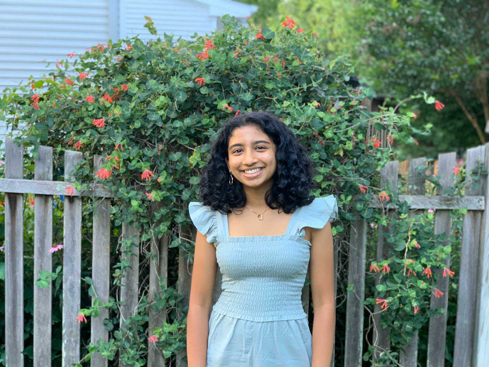
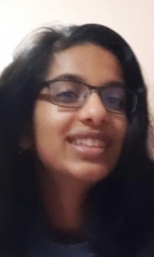
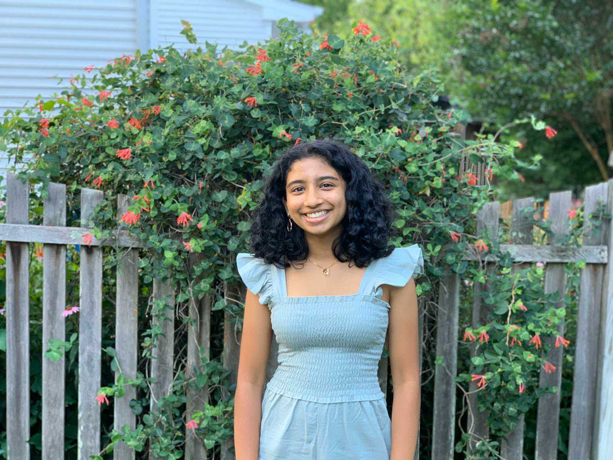
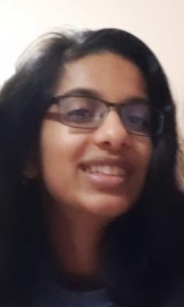

About Us
 



Hailena attends Thomas Jefferson High School in Virginia.
She took foundations and AP Computer Science in school, and
enjoys teaching kids java. She also learned html and python
in her free time, and looks forward to learning new languages.
In her free time, she enjoys baking and playing volleyball.
In the future, she hopes to find new ways to apply her knowlodge
of computer science and learn more about artificial intelligence.
Neha attends Chantilly High School in Chantilly, Virginia.
She has taken foundations and AP Computer Science, as well as
learned HTML, Python, CSS, Ruby, and little bit of JavaScript in
her free time. She loves participating in her CAP squadron’s
cyberpatriot program and also enjoys tutoring little kids. Outside
of coding, she enjoys competitive swimming, making science videos,
and Cessna training. She seeks to learn more about the language R
and someday pursue a field that combines the wonders of CS and
Biology.
Shreya is a rising junior at Chantilly High School in Northern
Virginia. She is part of the school’s FRC robotics team, Chantilly
Robotics 612. She has been a part of the FIRST organization for 6
years, and continues to mentor local FLL teams. In her free time,
she enjoys baking for family and friends and hiking. Using her
knowledge in engineering and computer science, she plans on exploring
Biomedical Engineering in the future.
Hailena attends Thomas Jefferson High School in Virginia.
She took foundations and AP Computer Science in school,
and enjoys teaching kids java. She also learned html
and python in her free time, and looks forward to learning new
languages. In her free time, she enjoys baking and playing
volleyball. In the future, she hopes to find new ways
to apply her knowlodge of computer science and learn more
about artificial intelligence.